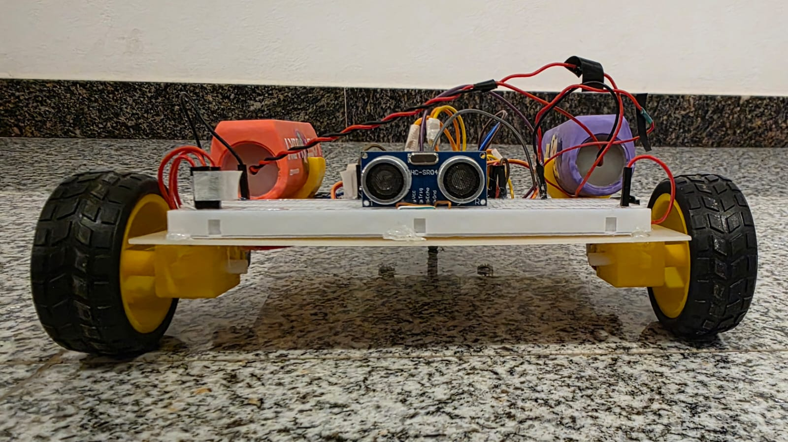
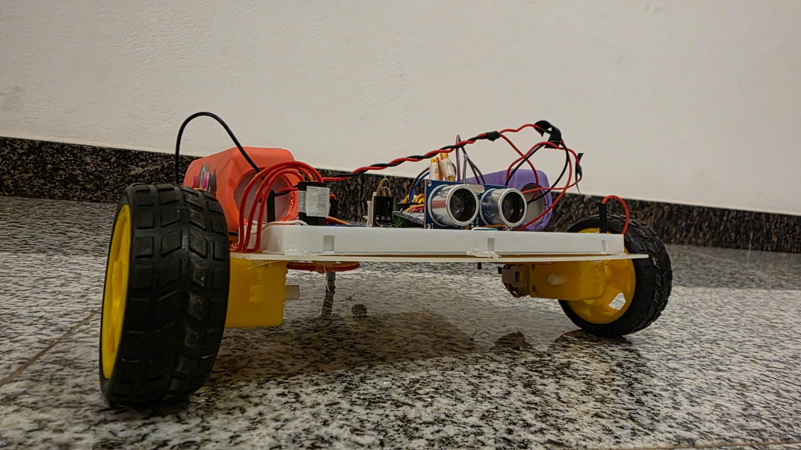

¿Qué problema resuelve o qué te dio ganas de hacerlo?
Steamy II nació como el gemelo de Steamy I: se armó replicando el mismo circuito y programa para reforzar el aprendizaje sobre control de actuadores y lectura de sensores con Arduino, y para poder tener dos robots funcionando al mismo tiempo.
¿Cómo funciona?
Igual que su gemelo, Steamy II se conecta mediante BT al celular usando el módulo HC-05 y una app creada en App Inventor. Al tener el mismo diseño que Steamy I, los dos robots pueden controlarse en simultáneo desde dos celulares distintos.
¿Qué usaste para construirlo?
| Material / herramienta | Cantidad | Nota |
|---|---|---|
| Arduino Uno | 1 | Microcontrolador |
| Puente H | 1 | L9110S |
| Motores Reductores | 2 | |
| Powerbank | 1 | Alimentación del circuito |
| Protoboard | 1 | |
| Cables Jumpers | — | |
| Base o "chasis" | 1 | Estructura del robot |
| HC-05 | 1 | Módulo Bluetooth |
| Sensor Últrasonico | 1 | Detección de obstaculos. |
| Sensores Infrarojos | 2 | Para seguir líneas |
Fotos, diagramas o capturas


Cómo replicarlo, paso a paso
-
Conseguí los materiales y revisá el pinout
Juntá lo de la lista de materiales de arriba (es la misma que la de Steamy I). Antes de conectar nada, revisá el pinout de tu Arduino para verificar que los pines que vas a usar no estén ocupados por otro proceso — así evitás dañar el microcontrolador o encontrar problemas sin saber bien qué los causa.
-
Hacé las conexiones
Conectá los 4 pines de control del puente H a los pines 5, 6, 9 y 10 del Arduino (dos por cada motor). Conectá el RX del módulo HC-05 al pin 8 y el TX al pin 7. Alimentá el conjunto con la powerbank.
-
Cargá el programa en el Arduino
Instalá la librería
SoftwareSerial.hdesde el gestor de librerías del IDE de Arduino, copiá el código de la sección "Código y archivos" de abajo y subilo a la placa. Es el mismo programa que corre Steamy I. Si el puerto no aparece en la lista, probablemente falten los drivers USB-Serial (por ejemplo el CH340): instalalos acá. -
Controlalo desde el celular
Conectate por Bluetooth al HC-05 desde la app hecha en App Inventor y mandale comandos:
Fadelante,Batrás,Lizquierda,Rderecha,Sdetener, yVseguido de un número de 0 a 255 para regular la velocidad. Como Steamy I usa la misma app, podés tener los dos robots emparejados con celulares distintos y manejarlos al mismo tiempo.
¿Dónde está el código o los archivos del proyecto?
#include <SoftwareSerial.h>
// ============================================================
// PINES
// ============================================================
// HC-05
#define rxPin 7 // RX del Arduino -> TX del HC-05
#define txPin 8 // TX del Arduino -> RX del HC-05
// Motores (Puente H tipo L9110)
#define M1_FWD 10 // Motor 1 - Adelante
#define M1_BWD 9 // Motor 1 - Atrás
#define M2_FWD 6 // Motor 2 - Adelante
#define M2_BWD 5 // Motor 2 - Atrás
// Ultrasónico HC-SR04
#define TRIG_PIN 3
#define ECHO_PIN 11
// Sensores infrarrojos (seguidor de línea)
#define IR_IZQ 2 // Infrarrojo 1 (izquierdo)
#define IR_DER 4 // Infrarrojo 2 (derecho)
// Configurado para seguir LÍNEA NEGRA sobre superficie clara.
// La mayoría de los módulos tipo TCRT5000 dan LOW cuando están
// sobre una superficie oscura (línea negra) y HIGH sobre una
// superficie clara. Si notás que el robot sigue el fondo claro
// en vez de la línea negra, cambiá esto a HIGH.
#define LINEA_DETECTADA LOW
SoftwareSerial bt(rxPin, txPin);
// ============================================================
// VARIABLES
// ============================================================
int velocity = 150; // Velocidad en modo manual (0-255)
const int autoSpeed = 150; // Velocidad en modos automáticos
char modo = 'X'; // 'X' normal | 'Y' seguidor de línea | 'Z' obstáculos
char lastCmd = 'S';
// Máquina de estados del modo "detectar obstáculos"
int autoState = 0;
unsigned long autoTimer = 0;
unsigned long lastSonarTime = 0;
char randomTurnDir = 'R';
// ============================================================
// SETUP
// ============================================================
void setup() {
Serial.begin(9600);
bt.begin(9600);
randomSeed(analogRead(A0));
pinMode(M1_FWD, OUTPUT);
pinMode(M1_BWD, OUTPUT);
pinMode(M2_FWD, OUTPUT);
pinMode(M2_BWD, OUTPUT);
pinMode(TRIG_PIN, OUTPUT);
pinMode(ECHO_PIN, INPUT);
pinMode(IR_IZQ, INPUT);
pinMode(IR_DER, INPUT);
stopAll();
Serial.println("Sistema iniciado.");
}
// ============================================================
// LOOP
// ============================================================
void loop() {
procesarBluetooth();
switch (modo) {
case 'Y':
seguidorLinea();
break;
case 'Z':
detectarObstaculos();
break;
default:
// 'X' modo normal: el movimiento lo maneja
// procesarBluetooth() directamente al recibir F/B/L/R/S
break;
}
}
// ============================================================
// BLUETOOTH
// ============================================================
void procesarBluetooth() {
while (bt.available()) {
char cmd = bt.read();
if (cmd == '\n' || cmd == '\r') continue;
cmd = toupper(cmd);
// --- Cambio de modo ---
if (cmd == 'X' || cmd == 'Y' || cmd == 'Z' || cmd == 'O') {
cambiarModo(cmd);
continue;
}
// --- Velocidad (manda "V" seguido de un número, ej: V180) ---
if (cmd == 'V') {
velocity = constrain(bt.parseInt(), 0, 255);
continue;
}
// --- Movimiento manual (solo tiene efecto en modo normal) ---
if (modo == 'X' && isValidCmd(cmd)) {
lastCmd = cmd;
movimiento(cmd);
}
}
}
void cambiarModo(char c) {
// 'O' queda como alias de 'Z' (detectar obstáculos), por si tu
// app manda ese botón en vez de Z.
if (c == 'O') c = 'Z';
modo = c;
stopAll();
autoState = 0;
lastCmd = 'S';
if (modo == 'X') Serial.println("Modo: NORMAL");
else if (modo == 'Y') Serial.println("Modo: SEGUIDOR DE LINEA");
else if (modo == 'Z') Serial.println("Modo: DETECTAR OBSTACULOS");
}
bool isValidCmd(char c) {
return (c == 'F' || c == 'B' || c == 'L' || c == 'R' || c == 'S');
}
// ============================================================
// SEGUIDOR DE LINEA
// ============================================================
// Velocidad de la rueda "de afuera" (la que sigue de largo) al corregir.
const int lineSpeed = autoSpeed;
// Velocidad de la rueda "de adentro" al corregir (más baja, pero
// SIN retroceder -> hace una curva suave en vez de pivotear).
// Probá bajar este número (incluso a 0) si sigue tirándose mucho
// hacia los costados, o subirlo si corrige muy brusco.
const int lineTurnSpeed = autoSpeed * 0.35;
void seguidorLinea() {
bool izq = (digitalRead(IR_IZQ) == LINEA_DETECTADA);
bool der = (digitalRead(IR_DER) == LINEA_DETECTADA);
// NOTA: en este modo el sentido de los motores está invertido
// a propósito (donde antes iba FWD ahora va BWD y viceversa),
// así que el robot sigue la línea moviéndose "hacia atrás".
if (izq && der) {
// derecho a velocidad plena
analogWrite(M1_BWD, lineSpeed);
analogWrite(M1_FWD, 0);
analogWrite(M2_BWD, lineSpeed);
analogWrite(M2_FWD, 0);
} else if (izq && !der) {
// se corrió a la derecha -> curva suave a la izquierda
analogWrite(M1_BWD, lineTurnSpeed);
analogWrite(M1_FWD, 0);
analogWrite(M2_BWD, lineSpeed);
analogWrite(M2_FWD, 0);
} else if (!izq && der) {
// se corrió a la izquierda -> curva suave a la derecha
analogWrite(M1_BWD, lineSpeed);
analogWrite(M1_FWD, 0);
analogWrite(M2_BWD, lineTurnSpeed);
analogWrite(M2_FWD, 0);
} else {
movimiento('S'); // perdió la línea -> se detiene
}
}
// ============================================================
// DETECTAR OBSTACULOS
// ============================================================
void detectarObstaculos() {
unsigned long currentMillis = millis();
switch (autoState) {
case 0: // AVANZAR Y MEDIR
if (currentMillis - lastSonarTime > 60) {
lastSonarTime = currentMillis;
int distancia = getDistance();
// Detección a 25 cm
if (distancia > 0 && distancia <= 25) {
movimiento('S');
randomTurnDir = (random(0, 2) == 0) ? 'L' : 'R';
autoState = 1;
autoTimer = currentMillis;
} else if (lastCmd != 'F') {
movimiento('F');
lastCmd = 'F';
}
}
break;
case 1: // FRENO SECO
if (currentMillis - autoTimer >= 150) {
movimiento('B');
autoState = 2;
autoTimer = currentMillis;
}
break;
case 2: // RETROCEDER
if (currentMillis - autoTimer >= 400) {
movimiento(randomTurnDir);
autoState = 3;
autoTimer = currentMillis;
}
break;
case 3: // GIRAR
if (currentMillis - autoTimer >= 450) {
movimiento('S');
autoState = 4;
autoTimer = currentMillis;
}
break;
case 4: // ESTABILIZAR Y REANUDAR
if (currentMillis - autoTimer >= 100) {
autoState = 0;
lastCmd = 'S';
}
break;
}
}
int getDistance() {
digitalWrite(TRIG_PIN, LOW);
delayMicroseconds(2);
digitalWrite(TRIG_PIN, HIGH);
delayMicroseconds(10);
digitalWrite(TRIG_PIN, LOW);
long duration = pulseIn(ECHO_PIN, HIGH, 30000);
if (duration == 0) return 999; // sensor colgado / sin eco
return duration * 0.034 / 2;
}
// ============================================================
// CONTROL DE MOTORES
// ============================================================
void stopAll() {
analogWrite(M1_FWD, 0);
analogWrite(M1_BWD, 0);
analogWrite(M2_FWD, 0);
analogWrite(M2_BWD, 0);
}
void movimiento(char c) {
int vel = (modo == 'X') ? velocity : autoSpeed;
stopAll();
switch (c) {
case 'F': // Adelante
analogWrite(M1_FWD, vel);
analogWrite(M2_FWD, vel);
break;
case 'B': // Atrás
analogWrite(M1_BWD, vel);
analogWrite(M2_BWD, vel);
break;
case 'L': // Izquierda
analogWrite(M1_BWD, vel);
analogWrite(M2_FWD, vel);
break;
case 'R': // Derecha
analogWrite(M1_FWD, vel);
analogWrite(M2_BWD, vel);
break;
case 'S': // Detener
// stopAll() ya se ejecutó arriba
break;
}
}
Desafíos y qué aprendiste
Al ser la segunda vez armando este circuito, identificar los pines y hacer las conexiones resultó más rápido que con Steamy I. Igualmente, es común que el Arduino no aparezca en la lista de puertos al cargar el programa: esto suele deberse a la falta de los drivers USB-Serial (por ejemplo, el CH340). Si te pasa, seguí este tutorial para instalarlos.